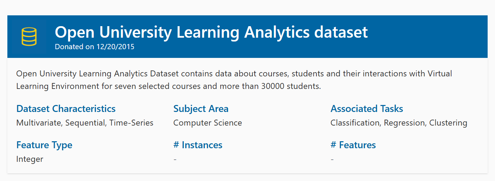

Engagement & performance
How does learning-platform activity relate to assessment results and course completion?
Transforming student, assessment, course, and learning-platform records into analysis-ready models.
This collaborative Week 7 FTW activity builds a SQL pipeline for the Open University Learning Analytics Dataset. Bronze preserves source tables, Silver applies cleaning and validation, and Gold organizes learning activity and performance into dimensional models.

OULAD combines student demographics, course and assessment records, registration, and daily Virtual Learning Environment activity. The pipeline is structured to support questions about how learners interact with course materials and how those patterns relate to outcomes.
How does learning-platform activity relate to assessment results and course completion?
What changes in activity or performance appear among students who withdraw?
When do students access resources, and how does activity change across a course?
Loads the seven OULAD tables as received: courses, assessments, student assessments, student information, registrations, VLE interactions, and VLE resource metadata.
Applies type casting, whitespace and empty-string cleanup, valid-range handling, and referential-integrity checks to prepare consistent records.
Organizes student, course, assessment, VLE resource, enrollment, course-phase, and course-week context around two analysis facts.
Connects students, courses, and assessments with submitted outcomes for performance and completion analysis.
Models learner interactions with course resources over time to support engagement analysis across weeks and course phases.
Validate source loading, expected structures, row counts, and basic integrity.
Check cleaned types, standardized text, valid ranges, and relationships between records.
Verify the dimensional structures and fact-table outputs used for analysis.